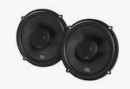
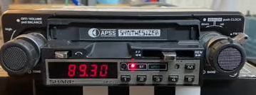

Ford Capri 2.0 L
After the Fiat Strada came the Ford Capri—or at least, the more I reconstruct the timeline, the more certain I become that it did.
The Capri gave me everything the Strada lacked: more power, rear-wheel drive and, most importantly, considerably more room in the front for courting purposes.
Priorities.
A master salesman
I bought the Capri from Phil Collett Car Sales in Porthcawl.
The salesman wouldn’t let me test-drive it because he didn’t think I would be able to handle the power.
Looking back, that was a cracking sales technique. Tell a young man that a car might be too powerful for him and there’s a fair chance he’ll immediately decide that he has to own it.
It certainly worked on me.
The car shown in the photograph isn’t my actual Capri, although it is the same model and colour. Mine had steel wheels painted white and would, rather obviously, have been right-hand drive.
Rear-wheel-drive reality
At last, I had the rear-wheel-drive car I had lusted after. Unfortunately, I soon discovered how expensive rear tyres were.
That put an end to the doughnuts.
I once managed to get the Capri up to 110 mph on the Ely Link Road. This was an act of youthful stupidity rather than an achievement, particularly in a car that became increasingly vague about the concept of steering as its speed rose.
Never had a car built outside the United States handled so badly. The front end seemed to lift, the view of the road began to disappear and going around corners became more of a polite suggestion than a guaranteed outcome.
Somehow, both the Capri and I survived.
Luxury, 1980s style
Looking back, it’s difficult to believe how spartan ordinary cars were during the 1980s. The Capri probably came with a radio, but I fitted my own radio-cassette player and installed a pair of enormous, thumping speakers in the parcel shelf.
It also had a heater.
And that was about it.
The windows were operated by handles, there was no central locking and the door key appeared to be universal. I’m fairly sure it could have opened at least 25 per cent of all the other Fords built during the same period.


The works car park
By then, I was working in Cardiff. Most weeks, I travelled around the country with Brian, visiting clients’ premises, while the Capri remained in the works car park.
Inevitably, I returned one week to discover that somebody had broken into it.
Fortunately, thanks to Ford’s remarkably accommodating door locks, nobody needed to smash a window to get inside.
The only thing stolen was a pair of baby shoes. Nothing else—just the shoes.
Of all the things someone might expect to steal from a young man’s Ford Capri, a pair of baby shoes probably wouldn’t be near the top of the list.
After that, I made sure never to leave anything in the car. The thieves could still let themselves in, but there was nothing left for them to take.
What came next?
Despite the handling, disappearing rear tyres and casual approach to security, I genuinely enjoyed owning the Capri. It looked good, felt exciting and was everything a young man thought a car ought to be.
Eventually, it developed a problem with the steering. Given that steering had never been one of the Capri’s strongest qualities, this was rather concerning and helped make up my mind that it was time for a change.
I part-exchanged it for an MG Metro Turbo.
I gave up rear-wheel drive, questionable steering and all that valuable room for courting—but gained a turbo.
That seemed like progress.